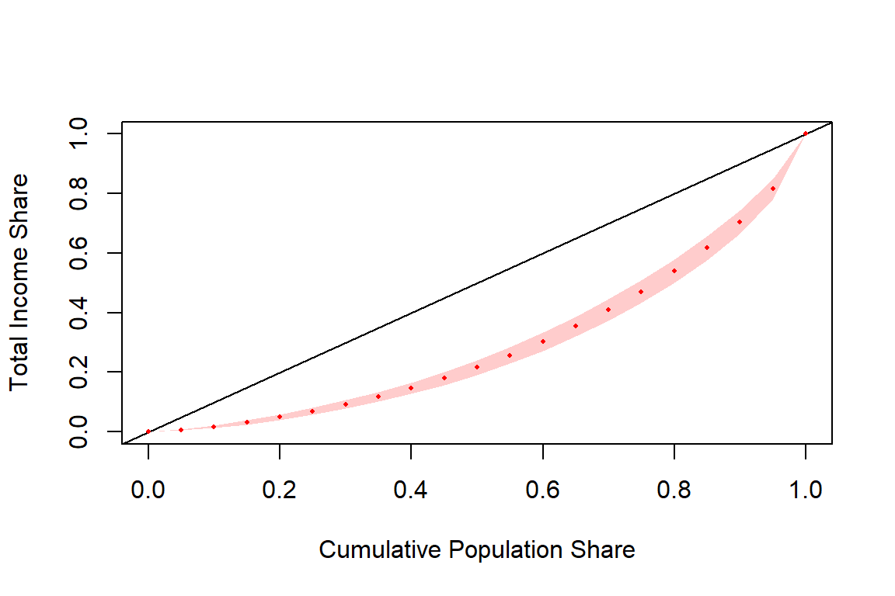
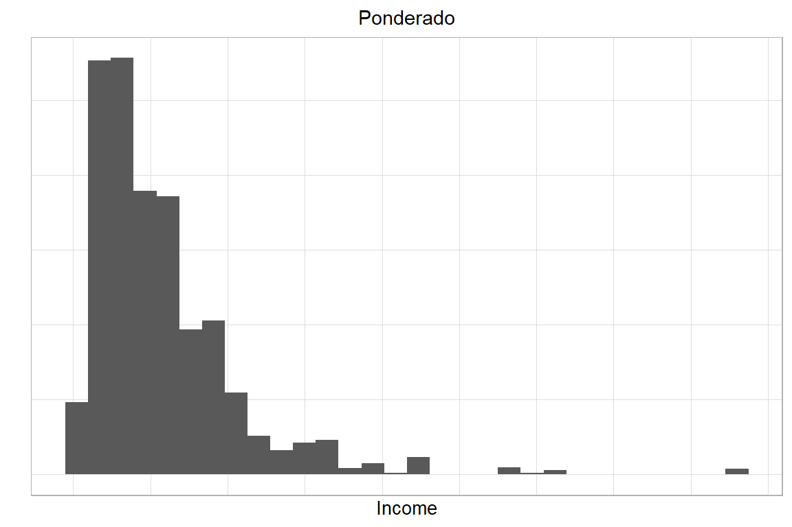
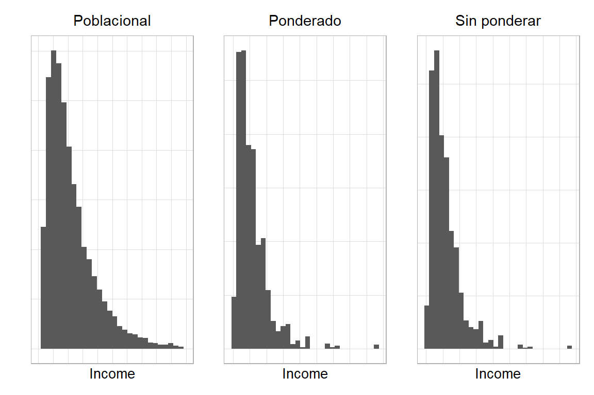
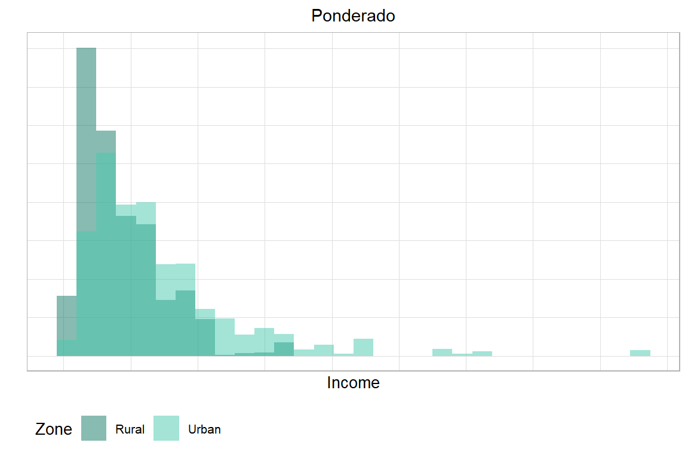
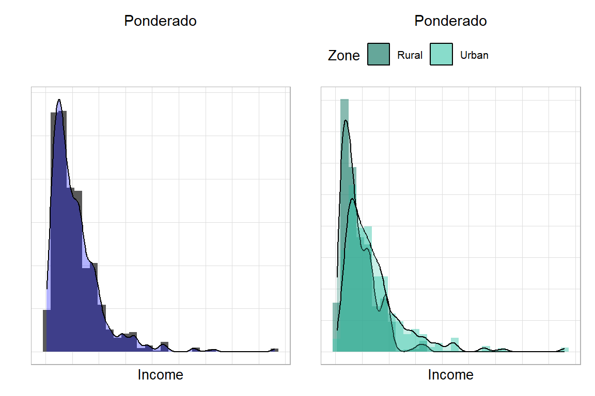
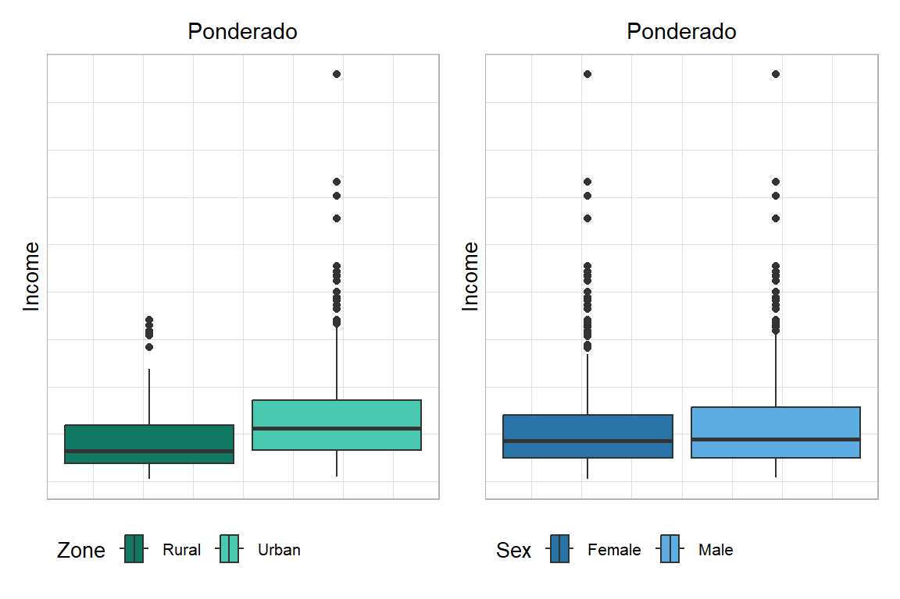
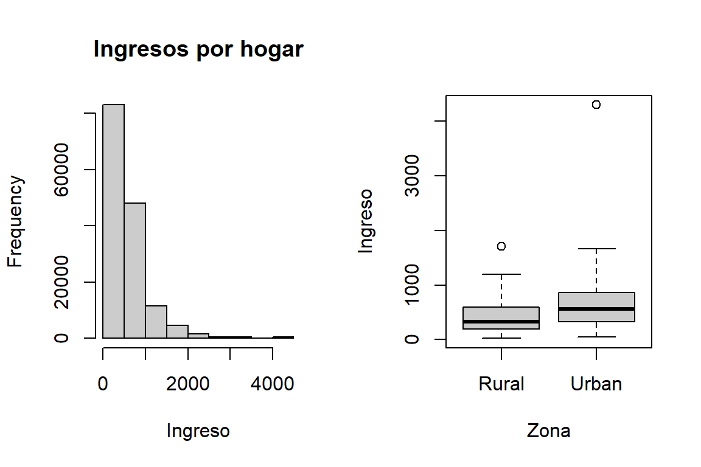
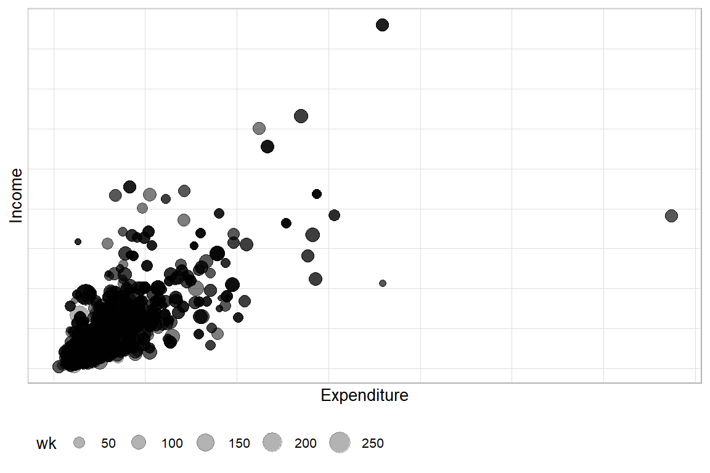
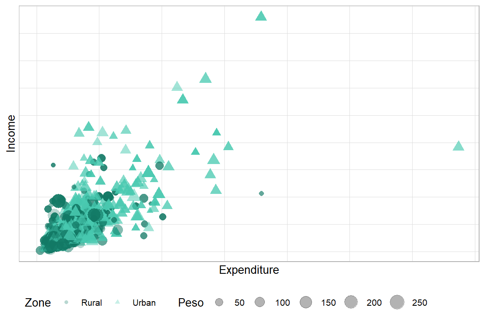

Capítulo 4 Análisis de las variables continuas
El análisis estadístico de encuestas ha evolucionado de manera constante, impulsado por el desarrollo de nuevas metodologías y enfoques que buscan mejorar la precisión y la representatividad de los resultados. En general, estos avances surgen en el ámbito académico y, con el tiempo, son adoptados por instituciones públicas, empresas privadas y organismos estadísticos, que demandan su incorporación en los principales programas de análisis de datos. Sin embargo, este proceso de adopción en software licenciado suele ser lento.
Para acortar esos tiempos y facilitar la aplicación práctica de sus desarrollos, muchos investigadores implementan sus metodologías en entornos de código abierto, principalmente en R o Python. En particular, R se ha consolidado como una de las herramientas más completas para el procesamiento y análisis de encuestas.
Como se ha mencionado en capítulos anteriores, R cuenta con múltiples librerías diseñadas para el tratamiento de encuestas complejas, cada una desarrollada con diferentes enfoques metodológicos y objetivos analíticos. En este capítulo, continuando con la línea de trabajo adoptada a lo largo del libro, nos centraremos en las librerías survey y srvyr. No obstante, se incorporarán otras librerías en la medida en que resulten necesarias para el desarrollo de ejemplos o aplicaciones específicas.
4.1 Definición del objeto de diseño
Las bases de datos utilizadas en el análisis de encuestas pueden encontrarse en una amplia variedad de formatos (.xlsx, .dat, .csv, .parquet, .sas7bdat, .sav, .txt, entre otros). Sin embargo, una buena práctica consiste en importar la información desde cualquiera de estos formatos y guardarla inmediatamente en un archivo con extensión .rds, que es el formato nativo de R.
Los archivos .rds permiten almacenar cualquier objeto o información en R, como marcos de datos, vectores, matrices o listas, y se caracterizan por su compatibilidad completa con el entorno de trabajo de R. Además, facilitan la lectura y escritura eficiente de los datos, reduciendo los tiempos de carga y evitando problemas de compatibilidad entre sesiones.
Otro formato propio de R es .Rdata, el cual permite guardar múltiples objetos en un solo archivo. En contraste, los archivos .rds almacenan únicamente un objeto, lo que hace su uso más controlado y reproducible. Por esta razón, se recomienda trabajar preferentemente con el formato .rds al documentar proyectos o reproducir análisis.
Para ilustrar la sintaxis que se utilizará a lo largo del capítulo, se empleará la misma base del capítulo anterior, que contiene una muestra de 2.427 registros y proviene de un muestreo complejo. A continuación, se muestra cómo cargar un archivo con extensión .rds:
De acuerdo con Naciones Unidas (2009, Sección 7.8), es fundamental que la estructura del diseño muestral sea tenida en cuenta en el proceso de inferencia al estimar estadísticas oficiales basadas en encuestas de hogares. Ignorar este aspecto puede generar estimaciones sesgadas y errores de muestreo subestimados.
En este sentido, los programas estadísticos incorporan funcionalidades específicas para manejar datos provenientes de encuestas con diseños complejos (Heeringa et al., 2017, apéndice A). Entre ellos, R, Stata, SAS y SPSS ofrecen procedimientos especializados para el cálculo de varianzas basadas en el diseño y métodos de replicación, permitiendo obtener estimaciones válidas de medias, totales, proporciones, percentiles y coeficientes de modelos de regresión ajustados al diseño muestral.
A diferencia de los programas con licencia, R es de acceso libre y de código abierto que, mediante paquetes especializados, ofrece herramientas robustas y flexibles para el análisis de encuestas complejas. El uso de estos paquetes implica que el usuario suministre información clave del diseño muestral, como factores de expansión, estratificación e identificadores de conglomerados.
Una vez cargada la muestra de hogares en R, el siguiente paso es definir el diseño muestral del cual proviene dicha muestra. Para ello se utilizará el paquete srvyr, que como se mencionó anteriormente, surge como un complemento del paquete survey. Estas librerías permiten definir objetos tipo survey.design, a los que se aplican las funciones de estimación y análisis de encuestas, y que pueden ser combinadas con la programación de tubería (%>%) del paquete tidyverse.
A continuación, se muestra un ejemplo en el que se define un objeto de tipo survey_design para la encuesta:
options(survey.lonely.UPM = "adjust")
library(survey)
library(srvyr)
diseno <- encuesta %>%
as_survey_design(
strata = Stratum,
ids = PSU,
fpc = NIh,
weights = wk,
nest = T)En este código se realiza lo siguiente:
encuesta: corresponde a la base de datos que contiene la muestra.as_survey_design(): convierte los datos en un objeto de clasesurvey_design, que almacena toda la información del diseño muestral.strata: indica la variable que define los estratos de la encuesta.ids: especifica las unidades primarias de muestreo (UPM) o conglomerados seleccionados en la primera etapa.weights: define la variable que contiene los factores de expansión asociados a cada observación, los cuales permiten llevar las estimaciones muestrales al nivel poblacional.fpc: identifica la variable con el tamaño poblacional de las UPMs dentro de los estratos con el fin de realizar la corrección por poblaciones finitas.nest = TRUE: señala que las UPM están anidadas dentro de los estratos, lo cual es común en los diseños multietápicos.
4.2 Estimación de totales y medias
Al trabajar con encuestas de hogares, el análisis de datos numéricos implica con frecuencia calcular estadísticas descriptivas como medias, totales y razones, ya que estas permiten sintetizar las principales características de la población y sirven de base para la toma de decisiones. Dichas estimaciones pueden calcularse para la población en su conjunto o para subgrupos específicos, según los objetivos de la investigación. Tal como destacan Heeringa et al. (2017), el cálculo de totales y medias poblacionales, junto con sus varianzas, ha sido esencial para el desarrollo de la teoría del muestreo probabilístico y la interpretación adecuada de los resultados de encuestas de hogares.
4.2.1 Estimación puntual
La estimación puntual puede calcularse de forma general o desagregada por niveles de análisis, según las necesidades de la investigación. En el contexto de las encuestas de hogares, estas estimaciones comprenden el cálculo de totales, promedios, razones y otras medidas agregadas.
Heeringa et al. (2017) señalan que la estimación del total o del promedio de una población, junto con su varianza, es un componente fundamental de la teoría del muestreo probabilístico, ya que permite obtener valores precisos sobre la situación de los hogares estudiados y facilita la toma de decisiones informadas en materia de políticas públicas.
4.2.2 Estimación de totales
Una vez definido el objeto del diseño muestral, se procede a realizar los procesos de estimación de los parámetros de interés. Para efectos de este texto, se iniciará con la estimación del total de ingresos de los hogares.
Para la estimación de totales en diseños muestrales complejos que incluyen estratificación (\(h = 1, 2, \ldots, H\)) y muestreo por conglomerados (donde los conglomerados están contenidos dentro del estrato \(h\) e indexados por \(\alpha = 1, 2, \ldots, a_h\)), el estimador del total puede expresarse como:
\[ \hat{Y}_{\omega} = \sum_{h=1}^{H}\sum_{\alpha=1}^{a_h}\sum_{i=1}^{n_{h\alpha}}\omega_{h\alpha i} y_{h\alpha i} \]
El estimador insesgado de la varianza para este total es:
\[ \text{var}\left(\hat{Y}_{\omega}\right) = \sum_{h=1}^{H} \frac{a_h}{a_h - 1} \left[ \sum_{\alpha=1}^{a_h} \left( \sum_{i=1}^{n_{h\alpha}} \omega_{h\alpha i} y_{h\alpha i} \right)^2 - \frac{\left( \sum_{\alpha=1}^{a_h} \omega_{h\alpha i} y_{h\alpha i} \right)^2}{a_h} \right] \]
La determinación de los totales poblacionales constituye uno de los pilares fundamentales del análisis de encuestas. Tanto las medias como las proporciones y las razones se derivan de estos totales. Un total se define como la suma de una variable específica (por ejemplo, ingreso o gasto) a nivel de toda la población. Para estimar el ingreso total de todos los hogares de un país, se combinan los datos de la muestra aplicando los pesos muestrales, los cuales reflejan el diseño del estudio y garantizan la representatividad de las estimaciones.
En el caso de variables numéricas simples, las estimaciones básicas corresponden a los totales y las medias, mientras que las razones permiten establecer comparaciones entre dos variables numéricas. Estos cálculos pueden realizarse para toda la población o de forma desagregada por dominios de estudio, según los objetivos de la investigación.
Para encuestas con estratificación (\(h=1,2,...,H\)) y submuestreo en las UPM (ubicadas dentro de cada estrato \(h\) e identificadas por \(i\)), el total poblacional se estima mediante:
\[ \hat{Y} = \sum_{h=1}^{H} \sum_{i \in s_{1h}} \sum_{k \in s_{hi}} w_{hik} \, y_{hik} \]
Cuando no hay ausencia de respuesta, la varianza de \(\hat{Y}\) puede calcularse usando el estimador del último clúster ((Ultimate Cluster Estimator).
El intervalo de confianza de nivel \((1-\alpha)100\%\) para el total poblacional \(Y\) se calcula como:
\[ \hat{Y} \pm t_{1-\alpha/2, df} \times \sqrt{\hat{V}_{UC}(\hat{Y})} \]
A medida que los grados de libertad aumentan, la distribución \(t\) de Student tiende a la normal. Esta propiedad explica por qué muchas Oficinas Nacionales de Estadística (ONE) utilizan dicha aproximación para reportar intervalos de confianza. No obstante, es importante tener en cuenta que esta aproximación puede resultar menos confiable cuando el tamaño de la muestra es reducido, aunque suele ofrecer buenos resultados en encuestas de hogares de gran escala.
El cálculo de la estimación del total y de su varianza asociada puede resultar complejo, por lo que es necesario considerar distintos enfoques metodológicos.
4.2.2.1 Enfoques para la estimación de la varianza
Como se mencionó anteriormente, al trabajar con encuestas de hogares es fundamental no solo obtener estimaciones puntuales, sino también cuantificar la incertidumbre asociada a dichas estimaciones. Comprender y estimar esta incertidumbre constituye una parte esencial del análisis de los datos de encuestas de hogares. Mediante la aplicación de métodos apropiados, los usuarios pueden evaluar la precisión de sus estimaciones.
Existen diversos métodos para estimar dicha precisión y, con el apoyo de software moderno, estos enfoques pueden implementarse de manera eficiente para respaldar análisis rigurosos y confiables. Entre los principales métodos se encuentran:
Ecuaciones de estimación: proporcionan un marco flexible para estimar totales, medias, razones y otros parámetros, así como sus varianzas correspondientes, integrando una visión unificada de la teoría del muestreo (Binder, 1983).
Linealización de Taylor: consiste en aproximar estadísticas no lineales complejas mediante expresiones lineales, y posteriormente estimar la varianza de dicha aproximación.
Método del Último Clúster: utilizado con frecuencia en encuestas basadas en muestreo estratificado en múltiples etapas. Se fundamenta en el cálculo de la varianza a partir de las diferencias entre las estimaciones obtenidas a nivel de las unidades primarias de muestreo (UPM). Este método suele combinarse con la linealización de Taylor para estimar la varianza de estadísticas no lineales, como medias o razones.
Bootstrap y otros métodos de replicación: se fundamentan en tomar repetidas submuestras del conjunto de datos observado, calcular estimaciones para cada réplica y luego utilizar la variabilidad entre estas estimaciones replicadas para inferir la varianza del estimador principal.
Ecuaciones de estimación y linealización de Taylor
Como se mencionó en el apartado anterior, uno de los enfoques más utilizados para cuantificar la incertidumbre en encuestas de hogares se basa en la formulación de ecuaciones de estimación y en la aplicación de la linealización de Taylor. Estos métodos proporcionan un marco general que permite definir los parámetros de interés, obtener sus estimadores muestrales y, a partir de ellos, aproximar sus varianzas.
Muchos parámetros poblacionales pueden expresarse como soluciones de ecuaciones de estimación que involucran totales poblacionales. Aunque los detalles técnicos pueden ser complejos, la idea fundamental es que los mismos principios utilizados para estimar totales pueden aplicarse también para la estimación de varianzas. Este marco general hace que el método sea sencillo y flexible, facilitando su implementación en software estadístico especializado.
Una ecuación de estimación poblacional genérica puede expresarse de la siguiente manera:
\[ \sum_{k\in U} z_k(\theta)=0, \]
donde \(z_k(\cdot)\) es una función de estimación evaluada para la unidad \(k\) y \(\theta\) representa el parámetro poblacional de interés. Estas ecuaciones proporcionan un marco general para definir y calcular diversos parámetros de la población, como totales, medias y razones.
Para el total poblacional: \(z_k(\theta)=y_k-\theta/N\). La ecuación de estimación es \(\sum_{k\in U}(y_k-\theta/N)=0\), cuya solución es \(\theta=\sum_{k\in U} y_k = Y\).
Para la media poblacional: \(z_k(\theta)=y_k-\theta\). La ecuación es \(\sum_{k\in U}(y_k-\theta)=0\), cuya solución es \(\theta=\left(\sum_{k\in U} y_k\right)/N = \overline{Y}\).
Para razones de totales: \(z_k(\theta)=y_k-\theta x_k\). La ecuación \(\sum_{k\in U}(y_k-\theta x_k)=0\) conduce a la razón poblacional \(\theta=\dfrac{\sum_{k\in U} y_k}{\sum_{k\in U} x_k} = R\).
La idea de definir parámetros poblacionales como soluciones de ecuaciones de estimación a nivel de población conduce naturalmente a un método general para obtener los estimadores muestrales. En este caso, se utilizan ecuaciones de la forma:
\[ \sum_{k\in s} d_k\, z_k(\theta)=0, \]
donde \(d_k\) son los pesos de diseño y \(z_k(\theta)\) la función de estimación evaluada para cada unidad de la muestra. Bajo un muestreo probabilístico y asumiendo respuesta completa, la suma muestral \(\sum_{k\in s} d_k\, z_k(\theta)\) es insesgada respecto a su análoga poblacional, lo que garantiza que las soluciones de estas ecuaciones sean estimadores consistentes de los parámetros poblacionales.
La linealización de Taylor constituye un complemento natural a este marco, ya que permite aproximar la varianza de estimadores no lineales. El procedimiento consiste en aplicar una expansión de Taylor de primer orden alrededor del parámetro estimado, con el fin de reemplazar el estimador no lineal por una expresión lineal. De esta manera, se facilita el cálculo de varianzas en situaciones donde no existen fórmulas exactas o su derivación resulta demasiado compleja.
Un estimador consistente de la varianza, derivado mediante linealización de Taylor para soluciones de ecuaciones de estimación muestrales, puede expresarse como:
\[ \hat{V}_{TL}(\hat{\theta}) = [\hat{J}(\hat{\theta})]^{-1} \, \hat{V}_p \Bigg[\sum_{k\in s} d_k\, z_k(\hat{\theta})\Bigg] \, [\hat{J}(\hat{\theta})]^{-1} \]
donde \(\hat{J}(\hat{\theta}) = \sum_{k\in s} d_k \left[ \frac{\partial z_k(\theta)}{\partial \theta} \right]_{\theta=\hat{\theta}}\).
Este resultado muestra cómo la linealización de Taylor convierte la estimación de varianzas de parámetros complejos en un problema de estimación de totales, lo que explica su amplia adopción en software especializado para el análisis de encuestas.
Ultimate Cluster
El método del Ultimate Cluster constituye un enfoque directo y robusto para estimar la varianza de totales en encuestas que emplean diseños de muestreo por conglomerados estratificados en múltiples etapas. Propuesto por Hansen et al. (1953), este método simplifica la complejidad de los diseños multinivel al centrarse únicamente en la variación entre las Unidades Primarias de Muestreo (UPM). Se asume que, dentro de cada estrato de muestreo, las UPM fueron seleccionadas de manera independiente con reemplazo (posiblemente con probabilidades desiguales), aunque en la práctica la selección suele realizarse sin reemplazo.
El método se basa en la variación entre las estadísticas calculadas a nivel de UPM. Cuando se aplica correctamente, refleja implícitamente cualquier submuestreo realizado dentro de las UPM, permitiendo estimaciones de varianza más simples pero confiables. Es especialmente útil en diseños complejos que incluyen estratificación y probabilidades desiguales de selección tanto de UPM como de unidades de niveles inferiores (hogares e individuos).
Los requisitos para aplicar este método son:
- Disponibilidad de estimaciones insesgadas de totales para las variables de interés en cada UPM muestreada.
- Al menos dos UPM muestreadas por estrato, si la muestra se estratifica en la primera etapa.
- Información completa sobre UPM, estratos y pesos en el conjunto de datos de la encuesta.
Considere un diseño de muestreo en múltiples etapas donde se seleccionan \(n_h\) UPM en el estrato \(h\), \(h=1,\dots,H\). Sea
\[ \hat{Y}_{hi} = \sum_{k\in s_{hi}} d_{hik} y_{hik} \]
una estimación del total poblacional \(Y_{hi}\) de la UPM \(i\) en el estrato \(h\). Un estimador insesgado del total poblacional \(Y = \sum_{h=1}^H \sum_{i \in U_{1h}} Y_{hi}\) se expresa como
\[ \hat{Y}_{UC} = \sum_{h=1}^H \hat{Y}_h, \quad \text{donde} \quad \hat{Y}_h = \frac{1}{n_h} \sum_{i\in s_{1h}} \hat{Y}_{hi}. \]
El estimador Ultimate Cluster de la varianza correspondiente se calcula mediante:
\[ \hat{V}_{UC}(\hat{Y}) = \sum_{h=1}^H \frac{n_h}{n_h-1} \sum_{i \in s_{1h}} (\hat{Y}_{hi} - \hat{Y}_h)^2 \]
Para más detalles, véase Hansen, Hansen et al. (1953, p. 258) o Wolter & Wolter (2007).
Aunque originalmente se diseñó para calcular varianzas de estimadores de totales, el método puede combinarse con linealización de Taylor o ecuaciones de estimación para derivar varianzas de otros parámetros poblacionales formulables como soluciones de ecuaciones de estimación. Esta flexibilidad hace que el método sea aplicable a diversos contextos de análisis de encuestas de hogares.
Un supuesto fundamental es que, dentro de cada estrato, las UPM se eligen de forma independiente y con reemplazo. En la práctica, la mayoría de las encuestas selecciona UPM sin reemplazo, generando diseños más eficientes. En consecuencia, las varianzas calculadas bajo la hipótesis de independencia constituyen aproximaciones de las verdaderas varianzas de muestreo. Cuando la fracción muestral es pequeña (por ejemplo, inferior al \(5\%\)), dichas aproximaciones suelen ser suficientemente precisas para su utilización por parte de las oficinas nacionales de estadística o de otros analistas.
El método del último cluster destaca por su simplicidad y robustez, lo que lo hace muy atractivo en la práctica. Aunque los métodos más sofisticados que consideran todas las etapas del diseño pueden ofrecer estimaciones de varianza ligeramente más precisas, su aplicación requiere información más detallada y mayor complejidad computacional. Por el contrario, el método del último cluster proporciona una aproximación confiable y eficiente, especialmente útil al estimar totales o medias en encuestas de hogares. Para un análisis detallado sobre la precisión de esta aproximación y posibles alternativas, véase Särndal et al. (2003).
Bootstrap
En muchos casos, los microdatos de encuestas públicas omiten información esencial del diseño, como identificadores de estratos o de unidades primarias de muestreo (UPM), para proteger la confidencialidad de los encuestados. Esta omisión limita la capacidad de los usuarios para calcular varianzas válidas. En tales situaciones, se recomienda que las oficinas nacionales de estadística (NSO) proporcionen pesos de replicación, lo que permite a los analistas estimar errores estándar de manera correcta. Sin estos datos, los usuarios secundarios no pueden reproducir los errores estándar publicados ni considerar adecuadamente el diseño complejo de la encuesta.
Los métodos de replicación estiman la varianza generando subconjuntos de la muestra original, calculando estimaciones para cada uno y utilizando la variabilidad observada entre estas estimaciones para aproximar la varianza del estimador principal. Son particularmente útiles cuando no se dispone de información sobre estratos o UPM, situación en la que no se puede aplicar el método de Ultimate Cluster.
El Bootstrap es una herramienta de replicación robusta y versátil. Originalmente introducido por Efron (1979) para datos que no provenían de encuestas, su adaptación más usada para encuestas de hogares es el Bootstrap de Reescalamiento Rao-Wu-Yue (Rao et al., 1992). Este método se ajusta de manera óptima a diseños de muestreo estratificados y multietápicos, y es ampliamente empleado para la estimación de varianzas en encuestas complejas.
El procedimiento consiste en generar muchas réplicas de la muestra original, simulando extracciones repetidas de la población. Cada réplica se construye mediante la creación de columnas adicionales de pesos de replicación en la base de datos, siguiendo este proceso:
- Para cada estrato, se seleccionan aleatoriamente las UPM con reemplazo; algunas pueden repetirse y otras no aparecer. Cada UPM elegida se incorpora con todas sus observaciones. Si el tamaño de la muestra de primera etapa en el estrato \(h\) es mayor que dos (\(n_h > 2\)), el número de UPM seleccionadas por réplica es \(n_h - 1\).
- Este proceso se repite muchas veces, habitualmente cientos, generando un gran número de réplicas. La cantidad de veces que una UPM \(i\) del estrato \(h\) aparece en la réplica \(r\) se denota \(n_{hi}^{(r)}\), variando entre 0 y \(n_h - 1\).
- A partir de cada réplica se calculan nuevos pesos bootstrap para todas las unidades, reflejando cuántas veces fue seleccionada su UPM. El peso de la unidad \(k\) en la réplica \(r\) se calcula como:
\[ w_{hik}^{(r)} = w_{hik} \times \frac{n_h}{n_h - 1} \times n_{hi}^{(r)} \]
Si los pesos originales incluyen ajustes por no respuesta o calibración, estos deben aplicarse también a cada conjunto de pesos bootstrap.
Cuando la NSO proporciona únicamente pesos de replicación Bootstrap, los analistas pueden estimar errores estándar correctamente, aun sin identificadores de estratos o UPM. Para cada réplica \(r\), se calcula el parámetro de interés \(\hat{\theta}^{(r)}\) usando los pesos bootstrap \(w_{hik}^{(r)}\). La varianza del estimador original se aproxima mediante la variabilidad entre todas las réplicas:
\[ \hat{V}_B(\hat{\theta}) = \frac{1}{R} \sum_{r=1}^{R} \left(\hat{\theta}^{(r)} - \tilde{\theta}\right)^2, \quad \tilde{\theta} = \frac{1}{R} \sum_{r=1}^{R} \hat{\theta}^{(r)} \]
Este enfoque asegura que la dispersión entre réplicas capture fielmente la incertidumbre del parámetro.
El Bootstrap ofrece múltiples ventajas. A pesar de requerir un mayor procesamiento computacional, es eficaz para diseños de encuesta complejos y permite estimar parámetros difíciles de calcular con métodos tradicionales, como medianas u otras estadísticas no lineales. Es especialmente útil para analistas que trabajan con bases de datos sin identificadores de estratos y UPM, pero con pesos de replicación.
La simplicidad del método facilita su aplicación incluso sin software estadístico especializado. Sin embargo, la mayoría de los paquetes estadísticos modernos ya incluyen procedimientos para aplicar Bootstrap y calcular varianzas, ampliando su disponibilidad y robustez. No obstante, su uso no es recomendable en encuestas repetidas con muestras superpuestas ni en situaciones con fracciones de muestreo grandes y tamaños de muestra pequeños (Bruch et al., 2011).
La función survey_total() se utiliza para estimar totales a partir del objeto de diseño. Esta función incorpora automáticamente los factores de expansión y la estructura del diseño, garantizando que las estimaciones reflejen correctamente el modelo de inferencia.
Los argumentos principales son:
x: Variable sobre la cual se desea calcular el total. También puede dejarse vacío si se desea obtener el total de casos ponderado.na.rm: Indica si deben eliminarse los valores faltantes (NA) antes del cálculo. Por defecto esFALSE.vartype: Define el tipo de estimación de la medida de incertidumbre que se desea calcular. Puede tomar uno o varios de los siguientes valores:- “se”: error estándar (valor por defecto)
- “ci”: intervalo de confianza
- “var”: varianza
- “cv”: coeficiente de variación
level: Nivel de confianza utilizado para el cálculo del intervalo de confianza. Por defecto es 0.95.deff: Valor lógico que indica si se debe retornar el efecto del diseño (DEFF).
El siguiente ejemplo presenta cómo estimar totales y sus intervalos de confianza para diferentes variables de interés en R, utilizando la función survey_total(). A continuación, se presentan los códigos correspondientes, presentada en la Tabla 4.1:
| ty | ty_low | ty_upp | ty_deff |
|---|---|---|---|
| 85793667 | 76877414 | 94709920 | 9.77 |
La función survey_total() (equivalente moderna de svytotal() del paquete survey) utiliza una sintaxis sencilla. En primer lugar, se especifica la variable de interés, en este caso, Income, que contiene la información cuyo total se desea estimar. A continuación, se aplica sobre el objeto que define el diseño muestral, y finalmente se puede indicar si se desea que el resultado incluya el efecto de diseño (deff = TRUE).
Por otro lado, el intervalo de confianza puede obtenerse directamente al incluir el argumento vartype = "ci" dentro de survey_total(), o bien utilizando la función confint() sobre el objeto resultante, especificando el nivel de confianza requerido.
Para continuar ilustrando el uso de la función survey_total() dentro del enfoque de srvyr, estimemos el total de gastos de los hogares, pero ahora calculando el intervalo de confianza al 90%. El siguiente código realiza esta estimación, presentada en la Tabla 4.3:
diseno %>%
summarise(ty = survey_total(Expenditure,
vartype = "ci", level = 0.9,
deff = T)) %>%
tabla_fmt()| ty | ty_low | ty_upp | ty_deff |
|---|---|---|---|
| 55677504 | 51628843 | 59726165 | 8.99 |
Si el objetivo es estimar el total de ingresos de los hogares, pero desagregado por sexo, se puede utilizar la función group_by() para agrupar por la variable de interés, junto con cascade() de la librería srvyr, que permite agregar una fila con el total general al final de la tabla. De esta manera, se pueden obtener fácilmente los totales por categoría y el total global dentro del mismo marco de resumen, como se muestra en la Tabla 4.5.
diseno %>%
group_by(Sex) %>%
cascade(Total = survey_total(Income,
vartype = c("se", "ci"),
level = 0.95),
.fill = "Total ingreso") %>%
tabla_fmt()| Sex | Total | Total_se | Total_low | Total_upp |
|---|---|---|---|---|
| Female | 44153820 | 2172764 | 39851530 | 48456110 |
| Male | 41639847 | 2720068 | 36253840 | 47025854 |
| Total ingreso | 85793667 | 4502931 | 76877414 | 94709920 |
Como se observa en los códigos anteriores, una forma práctica de obtener las estimaciones del total, su error estándar y su intervalo de confianza es mediante el argumento vartype, especificando las opciones "se" y "ci" respectivamente.
4.2.3 Estimación de la media e intervalo de confianza
La estimación de la media poblacional es un parámetro fundamental en las encuestas de hogares, ya que, por ejemplo, uno de los indicadores más utilizados en este tipo de estudios corresponde a los ingresos medios por hogar. Además, este tipo de parámetros permite describir y analizar las tendencias centrales de las variables de interés en la población objetivo.
Según Gutiérrez (2016), un estimador de la media poblacional puede expresarse como una razón no lineal entre dos totales poblacionales finitos, estimados de la siguiente forma:
\[\begin{eqnarray*} \bar{Y}_{\omega} & = & \frac{\sum_{h=1}^{H}\sum_{\alpha=1}^{a_{h}}\sum_{i=1}^{n_{h\alpha}}\omega_{h\alpha i}y_{h\alpha i}}{\sum_{h=1}^{H}\sum_{\alpha=1}^{a_{h}}\sum_{i=1}^{n_{h\alpha}}\omega_{h\alpha i}}\\ & = & \frac{\hat{Y}}{\hat{N}}. \end{eqnarray*}\]
Cabe señalar que, si \(y\) es una variable binaria, la media ponderada estima la proporción poblacional. Por otro lado, como \(\bar{Y}_{\omega}\) no es una estadística lineal, no existe una fórmula cerrada para la varianza de este estimador.
Por esta razón, es necesario recurrir a métodos de remuestreo o a la linealización de Taylor para aproximar su varianza. En este caso particular, utilizando series de Taylor, el estimador insesgado de la varianza se define como:
\[\begin{eqnarray*} var\left(\bar{Y}_{\omega}\right) & \dot{=} & \frac{var\left(\hat{Y}\right)+\bar{Y}_{\omega}^{2}\times var\left(\hat{N}\right)-2\times\bar{Y}_{\omega}\times cov\left(\hat{Y},\hat{N}\right)}{\hat{N}^{2}} \end{eqnarray*}\]
Como se puede observar, el cálculo de la varianza de la media poblacional implica componentes analíticos complejos, como la covarianza entre el total estimado y el tamaño poblacional estimado. Sin embargo, el paquete srvyr en R facilita estos cálculos al incorporar funciones que estiman directamente la media, su error estándar, el intervalo de confianza y el efecto del diseño.
A continuación, se presenta la sintaxis para estimar la media de los ingresos de los hogares, junto con su intervalo de confianza al 95%, presentada en la Tabla 4.7:
diseno %>%
summarise(media_ing = survey_mean(Income,
vartype = c("se", "ci"),
level = 0.95,
deff = TRUE)) %>%
tabla_fmt()| media_ing | media_ing_se | media_ing_low | media_ing_upp | media_ing_deff |
|---|---|---|---|---|
| 571 | 27.1 | 517 | 625 | 7.97 |
Como se aprecia, los argumentos utilizados en la función survey_mean() son similares a los de survey_total(). En este caso, vartype permite obtener el error estándar (“se”) y el intervalo de confianza (“ci”), mientras que el argumento deff = TRUE solicita el cálculo del efecto del diseño.
De forma análoga, es posible estimar la media de los gastos de los hogares, empleando la misma estructura de código, presentada en la Tabla 4.9:
diseno %>%
summarise(media_gastos = survey_mean(Expenditure,
vartype = c("se", "ci"),
level = 0.95,
deff = TRUE)) %>%
tabla_fmt()| media_gastos | media_gastos_se | media_gastos_low | media_gastos_upp | media_gastos_deff |
|---|---|---|---|---|
| 371 | 12.5 | 346 | 395 | 5.29 |
También se pueden realizar estimaciones de la media por subgrupos siguiendo el mismo esquema mostrado previamente. Particularmente, los gastos de los hogares discriminados por sexo es, presentada en la Tabla 4.11:
diseno %>%
group_by(Sex) %>%
cascade(Media = survey_mean(Expenditure,
level = 0.95,
vartype = c("se", "ci")),
.fill = "El gasto medio") %>%
arrange(desc(Sex)) %>%
tabla_fmt()| Sex | Media | Media_se | Media_low | Media_upp |
|---|---|---|---|---|
| Male | 374 | 15.1 | 345 | 404 |
| Female | 367 | 11.6 | 344 | 390 |
| El gasto medio | 371 | 12.5 | 346 | 395 |
De manera análoga, se pueden calcular las medias del gasto por zona, presentada en la Tabla 4.13:
diseno %>%
group_by(Zone) %>%
cascade(Media = survey_mean(Expenditure,
level = 0.95,
vartype = c("se", "ci")),
.fill = "El gasto medio") %>%
arrange(desc(Zone)) %>%
tabla_fmt()| Zone | Media | Media_se | Media_low | Media_upp |
|---|---|---|---|---|
| Urban | 460 | 20.71 | 419 | 501 |
| Rural | 274 | 9.77 | 255 | 293 |
| El gasto medio | 371 | 12.46 | 346 | 395 |
Asimismo, es posible realizar una estimación combinada por sexo y zona, presentada en la Tabla 4.15:
diseno %>%
group_by(Zone, Sex) %>%
cascade(Media = survey_mean(Expenditure,
level = 0.95,
vartype = c("se", "ci")),
.fill = "El gasto medio") %>%
arrange(desc(Zone), desc(Sex)) %>%
tabla_fmt()| Zone | Sex | Media | Media_se | Media_low | Media_upp |
|---|---|---|---|---|---|
| Urban | Male | 470 | 25.23 | 420 | 520 |
| Urban | Female | 451 | 18.70 | 414 | 488 |
| Urban | El gasto medio | 460 | 20.71 | 419 | 501 |
| Rural | Male | 275 | 9.67 | 256 | 294 |
| Rural | Female | 273 | 11.11 | 251 | 295 |
| Rural | El gasto medio | 274 | 9.77 | 255 | 293 |
| El gasto medio | El gasto medio | 371 | 12.46 | 346 | 395 |
Las medias o promedios poblacionales son esenciales para describir la tendencia central de una variable. Por ejemplo, el gasto promedio de los hogares es un indicador representativo del comportamiento económico de la población. Su cálculo consiste en dividir el total estimado de la variable entre el tamaño poblacional estimado, de modo que su precisión depende de la exactitud en ambos componentes.
El estimador de la media poblacional se puede expresar como:
\[ \widehat{\bar{Y}} = \frac{\displaystyle \sum_{h=1}^{H} \sum_{i \in s_{1h}} \sum_{k \in s_{hi}} w_{hik} y_{hik}} {\displaystyle \sum_{h=1}^{H} \sum_{i \in s_{1h}} \sum_{k \in s_{hi}} w_{hik}} = \frac{\hat{Y}}{\hat{N}} \]
Dado que \(\widehat{\bar{Y}}\) es un estimador no lineal, su varianza exacta no puede expresarse en forma cerrada. Por ello, los paquetes estadísticos especializados en encuestas complejas emplean métodos como el remuestreo o la aproximación de Taylor, que se implementan automáticamente para facilitar su cálculo.
4.2.4 Estimación de medidas de localización y dispersión
En las encuestas de hogares siempre es necesario estimar medidas de dispersión de las variables estudiadas. Esto con el fin de, por ejemplo, ver qué tan disímiles son los ingresos medios de los hogares en un país determinado y con esto poder tomar acciones de política pública. Por lo anterior, es importante estudiar este parámetro en este texto. A continuación, se presenta el estimador del error estándar:
\[\begin{eqnarray} s\left(y\right){}_{\omega} & = & \frac{\sum_{h=1}^{H}\sum_{\alpha=1}^{a_{h}}\sum_{i=1}^{n_{h\alpha}}\omega_{h\alpha i}\left(y_{h\alpha i}-\bar{Y}_{\omega}\right)^{2}}{\sum_{h=1}^{H}\sum_{\alpha=1}^{a_{h}}\sum_{i=1}^{n_{h\alpha}}\omega_{h\alpha i}-1} \end{eqnarray}\]
Para llevar a cabo la estimación en R del error estándar en encuestas de hogares, se utilizan la función survey_var la cual se ejemplifica a continuación, presentada en la Tabla 4.17:
diseno %>%
group_by(Zone) %>%
summarise(Sd = sqrt(survey_var(Income,
level = 0.95,
vartype = c("se", "ci")
)
)
) %>%
tabla_fmt()| Zone | Sd | Sd_se | Sd_low | Sd_upp |
|---|---|---|---|---|
| Rural | 310 | 113 | 267 | 348 |
| Urban | 582 | 277 | 432 | 700 |
Como se observó en el ejemplo anterior, se estimó el error estándar de los ingresos por zona, reportando tanto dicho error como el intervalo de confianza al 95%. Los argumentos de la función survey_var() son equivalentes a los utilizados en las funciones previas empleadas para estimar medias y totales.
Si el interés ahora se centra en estimar la error estándar clasificando por sexo y zona, los códigos computacionales son los siguientes, presentada en la Tabla 4.19:
diseno %>%
group_by(Zone, Sex) %>%
summarise(Sd = sqrt(survey_var(Income,
level = 0.95,
vartype = c("se", "ci")
)
)
) %>%
tabla_fmt()| Zone | Sex | Sd | Sd_se | Sd_low | Sd_upp |
|---|---|---|---|---|---|
| Rural | Female | 295 | 107 | 254 | 331 |
| Rural | Male | 326 | 120 | 278 | 367 |
| Urban | Female | 568 | 278 | 412 | 690 |
| Urban | Male | 597 | 281 | 447 | 716 |
Las medidas de posición no central (percentiles) se diseñaron para identificar otros puntos característicos de la distribución que no corresponden a valores centrales. Entre las más importantes se encuentran los cuartiles y los percentiles.
En la mayoría de las encuestas de hogares no solo se estiman totales, medias y proporciones; en algunos indicadores es necesario calcular otros parámetros, como medianas y percentiles. Tal como señalan Tellez Piñerez & Lemus Polanía (2015), la mediana es una medida de tendencia central que, a diferencia del promedio, no se ve fácilmente afectada por valores atípicos, por lo que se considera una medida robusta. La mediana es el valor que divide a la población en dos partes iguales, de modo que la mitad de las observaciones de la característica de interés se encuentra por encima de este valor y la otra mitad, por debajo.
Por otro lado, la estimación de percentiles de ingreso en un país puede ser fundamental para orientar el diseño de políticas públicas. Por ejemplo, permite identificar a las personas naturales que pertenecen al 10% superior de la distribución del ingreso para efectos tributarios, o definir subsidios de transporte dirigidos a los hogares que se encuentran en el 15% inferior de dicha distribución.
La estimación de cuantiles, según Loomis et al. (2005), se basa en los resultados asociados al estimador ponderado para totales y en el uso de una estimación de la función de distribución acumulada de la población (CDF, por sus siglas en inglés). En particular, la CDF para una variable \(y\) en una población finita dada de tamaño \(N\) se define de la siguiente manera:
\[\begin{eqnarray*} F\left(x\right) & = & \frac{{ \sum_{i=1}^{N}}I\left(y_{i}\leq x\right)}{N} \end{eqnarray*}\]
En donde, \(I\left(y_{i}\leq x\right)\) es una variable indicadora la cual es igual a 1 si \(y_{i}\) es menor o igual a un valor específico \(x\), 0 en otro caso. Un estimador de la CDF en un diseño muestral complejo con tamaño de muestra \(n\), está dado por:
\[\begin{eqnarray*} \hat{F}\left(x\right) & = & \frac{\sum_{h=1}^{H}\sum_{\alpha=1}^{a_{h}}\sum_{i=1}^{n_{h\alpha}}\omega_{h\alpha i}I\left(y_{i}\leq x\right)}{\sum_{h=1}^{H}\sum_{\alpha=1}^{a_{h}}\sum_{i=1}^{n_{h\alpha}}\omega_{h\alpha i}} \end{eqnarray*}\]
Una vez estimada la CDF utilizando los pesos del diseño muestral, el cuantil \(q\)-ésimo de una variable \(y\) es el valor más pequeño de \(y\) tal que la CDF de la población es mayor o igual que \(q\). Como es bien conocido, la mediana corresponde al valor para el cual la CDF es mayor o igual a 0.5; en consecuencia, la mediana estimada es aquel valor donde la estimación de CDF es mayor o igual a 0.5.
Siguiendo las recomendaciones de Heeringa et al. (2017) para estimar cuantiles, primero se consideran las estadísticas de orden, denotadas como \(y_{1},\ldots,y_{n}\), y encuentra el valor de \(j\) \((j=1,\ldots,n)\) tal que:
\[\begin{eqnarray*} & \hat{F}\left(y_{j}\right)\leq q\leq\hat{F}\left(y_{j+1}\right) \end{eqnarray*}\]
Con esta condición, la estimación del \(q\)-ésimo cuantil, \(Y_{q}\), en un diseño de muestreo complejo se obtiene mediante la interpolación lineal:
\[\begin{eqnarray*} \hat{Y}_{q} & = & y_{j}+\frac{q-\hat{F}\left(y_{j}\right)}{\hat{F}\left(y_{j+1}\right)-\hat{F}\left(y_{j}\right)}\left(y_{j+1}-y_{j}\right) \end{eqnarray*}\]
En cuanto a la estimación de la varianza e intervalos de confianza de los cuantiles, Kovar et al. (1988) hacen un estudio de simulación y recomiendan el uso del método Balanced Repeated Replication (BRR) debido a su buen desempeño bajo diseños complejos.
Tanto los estimadores como los métodos para la estimación de percentiles y sus varianzas están implementados en R. En particular, a función survey_median() permite obtener la mediana junto con su error estándar e intervalo de confianza. A continuación, se presenta la sintaxis para calcular la mediana del gasto de los hogares con la base de datos de ejemplo, presentada en la Tabla 4.21:
diseno %>%
summarise(mediana = survey_median(Expenditure,
level = 0.95,
vartype = c("se", "ci")
)
) %>%
tabla_fmt()| mediana | mediana_se | mediana_low | mediana_upp |
|---|---|---|---|
| 298 | 8.29 | 283 | 316 |
Como se puede observar, los argumentos de la función survey_median() son iguales que los utilizados para estimar totales y medias.
Del mismo modo que con la estimación de otros parámetros, es posible obtener la estimación de la mediana desagregada por dominios, como zona o sexo. A continuación se presentan algunos ejemplos: la Tabla 4.23 muestra los resultados por zona geográfica, y la Tabla 4.25 los presenta desagregados por sexo:
diseno %>%
group_by(Zone) %>%
summarise(mediana = survey_median(Expenditure,
level = 0.95,
vartype = c("se", "ci")
)
) %>%
tabla_fmt()| Zone | mediana | mediana_se | mediana_low | mediana_upp |
|---|---|---|---|---|
| Rural | 241 | 11.0 | 214 | 258 |
| Urban | 381 | 19.7 | 338 | 416 |
diseno %>%
group_by(Sex) %>%
summarise(mediana = survey_median(Expenditure,
level = 0.95,
vartype = c("se", "ci")
)
) %>%
tabla_fmt()| Sex | mediana | mediana_se | mediana_low | mediana_upp |
|---|---|---|---|---|
| Female | 300 | 9.70 | 284 | 322 |
| Male | 297 | 8.96 | 278 | 314 |
Si el objetivo es estimar un cuantil específico diferente de la mediana, por ejemplo el cuantil 0.25 (primer cuartil), puede utilizarse la función survey_quantile() de la siguiente manera, presentada en la Tabla 4.27:
diseno %>%
summarise(q = survey_quantile(Expenditure,
quantiles = 0.25,
level = 0.95,
vartype = c("se", "ci"),
interval_type = "score"
)
) %>%
tabla_fmt()| q_q25 | q_q25_se | q_q25_low | q_q25_upp |
|---|---|---|---|
| 200 | 13.2 | 163 | 216 |
Observe que se ha incorporado un nuevo argumento, interval_type = "score", que indica que los intervalos de confianza se construyen empleando el método de los intervalos score basados en la función de influencia del cuantil, este es un enfoque recomendado por Lumley (2010) para datos con diseño muestral complejo.
De manera análoga, la estimación del cuantil 0.25 puede realizarse por subgrupos, como sexo o zona usando group_by(), como se muestra en la Tabla 4.29.
diseno %>%
group_by(Zone, Sex) %>%
summarise(q = survey_quantile(Expenditure,
quantiles = 0.25,
level = 0.95,
vartype = c("se", "ci"),
interval_type = "score"
)
) %>%
tabla_fmt()| Zone | Sex | q_q25 | q_q25_se | q_q25_low | q_q25_upp |
|---|---|---|---|---|---|
| Rural | Female | 160 | 7.09 | 135 | 163 |
| Rural | Male | 163 | 3.45 | 150 | 163 |
| Urban | Female | 258 | 9.87 | 250 | 290 |
| Urban | Male | 259 | 9.74 | 258 | 297 |
4.3 Estimación de razones
Un caso particular de una función no lineal de totales es la razón poblacional, definida como el cociente de dos totales poblacionales de características de interés. En encuestas de hogares, este parámetro es relevante cuando, por ejemplo, se requiere conocer la cantidad de hombres por cada mujer, la proporción de ocupados respecto a la población en edad de trabajar, o la cantidad de mascotas por cada hogar. Puesto que la razón es un cociente de totales, tanto el numerador como el denominador son cantidades desconocidas y, por lo tanto, deben estimarse (Bautista, 1998). Formalmente, la razón poblacional se define como:
\[ R = \frac{Y}{X} \]
y su estimador puntual en el marco de un muestreo complejo se expresa como:
\[ \hat{R} = \frac{\hat{Y}}{\hat{X}} = \frac{\sum_{h=1}^{H}\sum_{\alpha=1}^{a_{h}}\sum_{i=1}^{n_{h\alpha}}\omega_{h\alpha i} y_{h\alpha i}} {\sum_{h=1}^{H}\sum_{\alpha=1}^{a_{h}}\sum_{i=1}^{n_{h\alpha}}\omega_{h\alpha i} x_{h\alpha i}}. \]
Sin embargo, dado que \(\hat{R}\) es un cociente entre dos estimadores, es decir, dos variables aleatorias, el cálculo de su varianza no es trivial. Para ello se emplea la linealización de Taylor, como lo muestra Gutiérrez (2016), o bien métodos de remuestreo.
Implementación computacional en R
En la práctica, estos cálculos se facilitan gracias a los paquetes especializados. En particular, la función survey_ratio implementa la estimación de razones y sus varianzas en el marco de encuestas complejas. A continuación, se ilustra cómo estimar la razón entre el gasto y el ingreso de los hogares, presentada en la Tabla 4.31:
diseno %>%
summarise(Razon = survey_ratio(numerator = Expenditure,
denominator = Income,
level = 0.95,
vartype = c("se", "ci"))
) %>%
tabla_fmt()| Razon | Razon_se | Razon_low | Razon_upp |
|---|---|---|---|
| 0.649 | 0.022 | 0.605 | 0.693 |
En este caso se especificó:
- La variable del Expenditure (
numerator), - La variable del Income (
denominator), - El nivel de confianza (
level) para los intervalos, y - Las estadísticas de incertidumbre deseadas (
vartype).
Interpretación aplicada
Las razones permiten expresar la relación entre dos variables, lo cual resulta especialmente útil para construir indicadores comparativos y de seguimiento. Un ejemplo directo en encuestas de hogares es la razón gasto/ingreso, que ayuda a identificar patrones de consumo y niveles de sostenibilidad económica de los hogares.
Más allá de este caso, las razones también se utilizan en marcos internacionales. Por ejemplo, el Indicador 2.1.1 de los Objetivos de Desarrollo Sostenible (ODS) —prevalencia de subalimentación— se calcula a partir de la razón entre el consumo de alimentos, medido en calorías ingeridas, y los requerimientos energéticos mínimos de la dieta, determinados según edad, sexo y nivel de actividad física.
De esta forma, las razones constituyen una herramienta central para transformar los resultados de encuestas en indicadores significativos que facilitan el análisis de realidades socioeconómicas y poblacionales.
Como se puede observar, la razón entre el gasto y el ingreso es, aproximando, 0.71. Lo que implica que por cada unidad 100 unidades monetarias que le ingrese al hogar, se gastan 71 unidades, consiguiendo un intervalo de confianza al 95% de 0.65 y 0.76.
Si ahora el objetivo es estimar la razón entre mujeres y hombres en la base de ejemplo, se realiza de la siguiente manera, presentada en la Tabla 4.33:
diseno %>%
summarise(Razon = survey_ratio(numerator = (Sex == "Female"),
denominator = (Sex == "Male"),
level = 0.95,
vartype = c("se", "ci"))
) %>%
tabla_fmt()| Razon | Razon_se | Razon_low | Razon_upp |
|---|---|---|---|
| 1.11 | 0.033 | 1.05 | 1.18 |
Como la variable sexo en la base de datos es una variable categórica, se tuvo la necesidad de generar las variables dummys para su cálculo realizando, Sex == “Female” para el caso de las mujeres y Sex == “Male” para el caso de los hombres. Los resultados del ejercicio anterior muestran que en la base de datos hay más mujeres que hombres, generando una razón de 1.13. Esto significa que, por cada 100 hombres hay aproximadamente 113 mujeres con un intervalo que varía entre 1.04 y 1.21.
Si se desea hacer la razón de mujeres y hombres pero en la zona rural, se haría de la siguiente manera, presentada en la Tabla 4.35:
sub_Rural <- diseno %>% filter(Zone == "Rural")
sub_Rural %>%
summarise(Razon = survey_ratio(numerator = (Sex == "Female"),
denominator = (Sex == "Male"),
level = 0.95,
vartype = c("se", "ci"))
) %>%
tabla_fmt()| Razon | Razon_se | Razon_low | Razon_upp |
|---|---|---|---|
| 1.07 | 0.033 | 1 | 1.13 |
Obteniendo nuevamente que hay más mujeres que hombres. Ahora bien, otro análisis de interés es estimar la razón de gastos pero solo en la población femenina. A continuación, se presentan los códigos computacionales, como se muestra en la Tabla \(ref?)(tab:tab-razon-gasto-ingreso-mujer).
sub_Urbano <- diseno %>% filter(Zone == "Urban")
sub_Rural <- diseno %>% filter(Zone == "Rural")
sub_Mujer <- diseno %>% filter(Sex == "Female")
sub_Hombre <- diseno %>% filter(Sex == "Male")sub_Mujer %>%
summarise(Razon = survey_ratio(numerator = Expenditure,
denominator = Income,
level = 0.95,
vartype = c("se", "ci"))
) %>%
tabla_fmt()| Razon | Razon_se | Razon_low | Razon_upp |
|---|---|---|---|
| 0.658 | 0.019 | 0.621 | 0.695 |
Dando como resultado que por cada 100 unidades monetarias que le ingresan a las mujeres se gastan 70 con un intervalo de confianza entre 0.65 y 0.76. Por último, análogamente para los hombres, la razón de gastos resulta muy similar que para las mujeres, como se muestra en la Tabla 4.39.
sub_Hombre %>%
summarise(Razon = survey_ratio(numerator = Expenditure,
denominator = Income,
level = 0.95,
vartype = c("se", "ci"))
) %>%
tabla_fmt()| Razon | Razon_se | Razon_low | Razon_upp |
|---|---|---|---|
| 0.639 | 0.027 | 0.585 | 0.694 |
4.4 Estimación del coeficiente de Gini
Para introducir esta sección, vale la pena considerar la siguiente reflexión: Definir lo justo siempre será difícil y es algo a lo que quizá sea poco realista aspirar a conseguir. Sin embargo, si estamos un poco más conscientes de cómo la desigualdad afecta nuestra libertad y cómo se refleja en el bienestar y calidad de vida de las personas, podremos poner en contexto una discusión que tendremos cada vez más presente en el mundo y en el país.
La desigualdad es un problema presente en todos los países, y en el ámbito económico constituye uno de los principales desafíos para los gobiernos y organismos internacionales. De hecho, Naciones Unidas lo reconoce explícitamente dentro de los Objetivos de Desarrollo Sostenible (ODS).
Entre las métricas más utilizadas para medir la desigualdad económica se encuentra el coeficiente de Gini (CG), el cual compara la distribución de ingresos observada con una distribución perfectamente equitativa. Su valor varía entre 0 (igualdad perfecta) y 1 (desigualdad máxima). Un valor de \(G = 0\) implica que todos los hogares tienen el mismo nivel de ingresos, mientras que valores más altos reflejan concentraciones crecientes de ingresos en una parte reducida de la población. Este indicador es fundamental para:
- Analizar los cambios en la distribución del ingreso a lo largo del tiempo.
- Comparar niveles de desigualdad entre regiones o países.
- Contextualizar políticas públicas y sociales orientadas a la equidad.
En encuestas de hogares, el cálculo del coeficiente de Gini debe incorporar los pesos muestrales ajustados al diseño de la encuesta, que con frecuencia se normalizan para simplificar el procesamiento.
De acuerdo con Binder & Kovacevic (1995), el estimador del coeficiente de Gini puede expresarse como:
\[ \hat{G} = \frac{2\sum_{h=1}^{H}\sum_{\alpha=1}^{a_{h}}\sum_{i=1}^{n_{h\alpha}}\omega_{h\alpha i}^{*}\hat{F}_{h\alpha i}y_{h\alpha i}-1}{\bar{y}_{\omega}} \]
donde:
- \(\omega_{h\alpha i}^{*}=\dfrac{\omega_{h\alpha i}}{\sum\_{h=1}^{H}\sum\_{\alpha=1}^{a_{h}}\sum\_{i=1}^{n\_{h\alpha}}\omega_{h\alpha i}}\) es el peso normalizado.
- \(\hat{F}\_{h\alpha i}\) representa la función de distribución acumulada (CDF) estimada en el conglomerado \(\alpha\) del estrato \(h\).
- \(\bar{y}\_{\omega}\) corresponde a la media ponderada de los ingresos.
Autores como Osier (2009) y Langel & Tillé (2013) profundizan en aspectos técnicos adicionales, especialmente en lo relacionado con la estimación de la varianza del coeficiente de Gini bajo diseños complejos.
El paquete convey implementa los procedimientos recomendados para calcular el coeficiente de Gini y su varianza en encuestas de hogares. A continuación se muestra la sintaxis para estimarlo en la base de datos de ejemplo, presentada en la Tabla 4.41:
library(convey)
diseno_gini <- convey_prep(diseno)
gini <- svygini(~Income, design = diseno_gini)
data.frame(Gini = coef(gini),
SE = SE(gini),
IC_Lower = confint(gini)[1],
IC_Upper = confint(gini)[2]) %>%
tabla_fmt()| Gini | Income | IC_Lower | IC_Upper | |
|---|---|---|---|---|
| Income | 0.413 | 0.018 | 0.378 | 0.448 |
Primero, se prepara el diseño muestral mediante convey_prep(). Luego, la función svygini() calcula el índice de Gini utilizando la variable de ingreso y el diseño de encuesta complejo especificado.
Si el interés se centra en estimar la curva de Lorenz, es necesario recordar que, según Kovacevic & Binder (1997), esta curva representa el porcentaje acumulado de la población (ordenada de la más pobre a la más rica) frente a su participación acumulada en el ingreso total. El área entre la curva de Lorenz y la línea de 45 grados se conoce como el área de Lorenz, y el coeficiente de Gini es igual al doble de dicha área. Así, una curva más cercana a la diagonal indica una distribución del ingreso más equitativa.
Para realizar la curva de Lorenz en R se utiliza la función svylorenz(), presentada en la Figura 4.1:
library(convey)
clorenz <- svylorenz(formula = ~Income,
design = diseno_gini,
quantiles = seq(0,1,.05),
alpha = .01)
Figura 4.1: Curva de Lorenz estimada para el ingreso de los hogares
Los argumentos que requiere la función son, inicialmente, los ingresos de los hogares y el diseño muestral complejo. Adicionalmente, se definen una secuencia de probabilidades que define la suma de los cuantiles a calcular (quantiles) y por último, un número que especifica el nivel de confianza para el gráfico (alpha).
4.5 Análisis de correlación
En el estudio de encuestas de hogares, además de describir variables de forma individual, resulta fundamental analizar cómo se relacionan entre sí. Una de las herramientas más utilizadas es el coeficiente de correlación de Pearson, que mide la fuerza y la dirección de la relación lineal entre dos variables numéricas. Sus valores oscilan entre –1 y 1:
- Un valor positivo indica que ambas variables tienden a aumentar al mismo tiempo.
- Un valor negativo señala que cuando una variable crece, la otra tiende a disminuir.
- Valores próximos a cero sugieren una relación lineal débil o inexistente.
Por ejemplo, puede ser de interés analizar si el ingreso de los hogares está asociado con su nivel de gasto, y en qué magnitud.
4.5.1 Ajuste al diseño muestral
En encuestas complejas, la correlación no puede calcularse como en una muestra simple. Es necesario incorporar los pesos muestrales para que la estimación sea representativa de la población. Este ajuste tiene en cuenta la estratificación, la conglomeración y las probabilidades de selección desiguales.
El cálculo ponderado implica evaluar la covarianza entre las dos variables y dividirla entre el producto de sus desviaciones estándar ponderadas, eliminando así la influencia de las unidades de medida.
4.5.2 Expresión formal
El coeficiente de correlación de Pearson ajustado por pesos se expresa como:
\[\hat{\rho}_{xy} = \frac{\displaystyle \sum_{h=1}^{H} \sum_{i \in s_{1h}} \sum_{k \in s_{hi}} w_{hik} (y_{hik} - \widehat{\bar{Y}})(x_{hik} - \widehat{\bar{X}})} {\sqrt{\displaystyle \sum_{h=1}^{H} \sum_{i \in s_{1h}} \sum_{k \in s_{hi}} w_{hik} (y_{hik} - \widehat{\bar{Y}})^2} \sqrt{\displaystyle \sum_{h=1}^{H} \sum_{i \in s_{1h}} \sum_{k \in s_{hi}} w_{hik} (x_{hik} - \widehat{\bar{X}})^2}}\]
Cuando las variables son categóricas u ordinales, se deben emplear otras medidas de asociación (como el coeficiente de contingencia o de correlación policórica).
4.5.3 Implementación en R
El paquete survey cuenta con la función svyvar() que permite obtener matrices de covarianzas ponderadas, a partir de las cuales se puede calcular la correlación. Otra opción más directa es usar svycor() de paquetes complementarios como jtools o implementar el cálculo manualmente.
Ejemplo con ingreso y gasto de los hogares, presentada en la Tabla \(ref?)(tab:tab-covarianza):
| Variable | variance | statistic.Expenditure | SE |
|---|---|---|---|
| Income | 243719 | 98337 | 44534 |
| Expenditure | 98337 | 77887 | 17659 |
El resultado entrega la matriz de correlaciones entre las variables analizadas bajo el diseño complejo.
4.6 Pruebas de hipótesis
En el análisis de variables provenientes de encuestas de hogares no basta con estudiar el comportamiento de cada variable por separado, por ejemplo, el ingreso medio de hombres y mujeres en un país, sino que también es fundamental evaluar las diferencias entre grupos, como la brecha salarial entre hombres y mujeres. Este tipo de análisis permite identificar desigualdades y orientar políticas públicas.
En esta sección se estudia la prueba de hipótesis para la diferencia de medias y se presentan las herramientas computacionales necesarias para estimar razones y contrastes.
Analizar diferencias entre grupos es un objetivo común en las encuestas de hogares. Un ejemplo típico es la pregunta: ¿Existen diferencias estadísticamente significativas en el ingreso medio entre hogares dirigidos por hombres y aquellos dirigidos por mujeres?
Para responder a preguntas como esta se utilizan pruebas de hipótesis, que son procedimientos estadísticos que permiten contrastar afirmaciones sobre parámetros poblacionales a partir de la evidencia obtenida en la muestra. En el contexto de encuestas, estas pruebas deben ajustarse al diseño muestral (estratificación, conglomerados y ponderación) para garantizar inferencias válidas.
4.6.1 Planteamiento general
Toda prueba de hipótesis se basa en dos proposiciones opuestas:
\[ \begin{cases} H_{0}: & \theta = \theta_0 \quad \text{(hipótesis nula)} \\ H_{1}: & \theta \neq \theta_0 \quad \text{(hipótesis alternativa, bilateral)} \end{cases} \]
Según el propósito del análisis, la hipótesis alternativa puede formularse de manera unilateral (\(\theta > \theta_0\) o \(\theta < \theta_0\)). El objetivo es evaluar si la evidencia contenida en la muestra es suficiente para rechazar \(H_0\) en favor de \(H_1\).
En muchos casos, los parámetros de interés (medias, proporciones, totales o razones) pueden expresarse como combinaciones lineales de estadísticas descriptivas:
\[ f(\theta_1,\ldots,\theta_J) = \sum_{j=1}^J a_j \theta_j \]
con estimador es:
\[ \hat{f} = \sum_{j=1}^J a_j \hat{\theta}_j \]
y con varianza dada por:
\[ Var(\hat{f}) = \sum_{j=1}^J a_j^2 Var(\hat{\theta}_j) \;+\; 2\sum_{j=1}^{J-1}\sum_{k>j}^J a_j a_k \, Cov(\hat{\theta}_j,\hat{\theta}_k). \]
Este marco general incluye, entre otros casos, la diferencia entre medias poblacionales, que será el enfoque principal de esta sección.
4.6.2 Prueba para la diferencia de medias
Sea \(\mu_{(y,d)}\) la media poblacional del dominio \(d\), con \(d=1,2\). El parámetro de interés es:
\[ \Delta = \mu_{(y,1)} - \mu_{(y,2)}. \]
Por ejemplo, \(\mu_{(y,1)}\) puede representar el ingreso medio en hogares con jefatura masculina y \(\mu_{(y,2)}\) el ingreso medio en hogares con jefatura femenina.
El estimador de la diferencia es:
\[ \hat{\Delta} = \hat{\bar{Y}}_1 - \hat{\bar{Y}}_2, \]
cuyo error estándar se calcula como:
\[ \hat{se}(\hat{\Delta}) = \sqrt{ \hat{Var}(\hat{\bar{Y}}_1) + \hat{Var}(\hat{\bar{Y}}_2) - 2 \hat{Cov}(\hat{\bar{Y}}_1, \hat{\bar{Y}}_2)}. \]
4.6.3 Estadístico de prueba e intervalo de confianza
El contraste se realiza con el estadístico:
\[ t = \frac{\hat{\Delta}}{\hat{se}(\hat{\Delta})}, \quad t \sim t_{(df)}, \]
donde los grados de libertad se aproximan como \(df = n - H\) (número de UPMs menos número de estratos).
El intervalo de confianza para \(\Delta\) al nivel \((1-\alpha)100\%\) se define como:
\[ \hat{\Delta} \;\pm\; t_{(1-\alpha/2,df)} \, \hat{se}(\hat{\Delta}). \]
4.6.4 Ejemplo aplicado en R
En encuestas complejas, estas pruebas se implementan con la función svyttest() del paquete survey, que incorpora automáticamente los ajustes del diseño muestral, como se muestra en la Tabla \(ref?)(tab:tab-ttest-sexo).
Ejemplo 1. Diferencia de ingresos por sexo (población total):
| Estadístico | p_valor | gl | IC_inf | IC_sup | Dif_estimada |
|---|---|---|---|---|---|
| 1.43 | 0.156 | 118 | -10.9 | 67.5 | 28.3 |
A partir de lo anterior, con un 95% de confianza no existe evidencia estadística suficiente para afirmar que los ingresos medios difieren por sexo.
Ejemplo 2. Diferencia de ingresos por sexo en zona urbana:
Otra hipótesis que puede evaluarse es si los ingresos medios de los hogares difieren según el sexo del jefe del hogar dentro del área urbana, como se muestra en la Tabla \(ref?)(tab:tab-ttest-sexo-urbano).
sub_Urbano <- diseno %>% filter(Zone == "Urban")
res <- svyttest(Income ~ Sex, design = sub_Urbano, level = 0.95)| Estadístico | p_valor | gl | IC_inf | IC_sup | Diferencia_estimada |
|---|---|---|---|---|---|
| 1.67 | 0.099 | 63 | -8.69 | 98.1 | 44.7 |
Nuevamente no se rechaza \(H_0\), lo que indica ausencia de diferencias significativas en el ingreso medio por sexo en la zona urbana, como se muestra en la Tabla \(ref?)(tab:tab-ttest-sexo-mayores).
Ejemplo 3. Diferencia de ingresos por sexo, restringido a mayores de 18 años:
| Estadístico | p_valor | gl | IC_inf | IC_sup | Diferencia_estimada |
|---|---|---|---|---|---|
| 1.6 | 0.113 | 118 | -8.7 | 80.8 | 36.1 |
En este caso tampoco se rechaza \(H_0\). Es decir, no se observa evidencia estadística de diferencias en los ingresos medios entre hombres y mujeres mayores de 18 años.
El procedimiento descrito no se limita a las medias, sino que también puede aplicarse a proporciones, totales, razones o cualquier función diferenciable de totales. En todos los casos, el contraste se fundamenta en la estimación puntual, su varianza (incluyendo covarianzas cuando corresponde) y la comparación con la distribución \(t\) ajustada al diseño muestral.
4.7 Estimación de contrastes
En varios análisis basados en encuestas de hogares es necesario comparar simultáneamente más de dos poblaciones. Por ejemplo, puede interesar contrastar los ingresos medios de los hogares en tres regiones o municipalidades durante la pospandemia, con el propósito de identificar y clasificar aquellas áreas donde el impacto del COVID-19 en el desempleo y la pérdida de ingresos fue más pronunciado.
En situaciones como esta, las pruebas de diferencia de medias presentadas en la sección anterior resultan insuficientes, ya que permiten comparar únicamente pares de poblaciones. Por ello, la estimación de contrastes constituye una alternativa adecuada y flexible para este tipo de análisis.
Retomando las definiciones presentadas en la sección anterior, un contraste se define como una combinación lineal de parámetros de la forma:
\[\begin{eqnarray*} f\left(\theta _{1},\theta_{2},...,\theta_{j}\right) & = & \sum_{j=1}^{J}a_{j}\theta_{j}. \end{eqnarray*}\]
Una estimación de esta función está dada por:
\[\begin{eqnarray*} f\left(\hat{\theta}_{1},\hat{\theta}_{2},...,\hat{\theta}_{j}\right) & = & \sum_{j=1}^{J}a_{j}\hat{\theta}_{j}, \end{eqnarray*}\]
cuya varianza del estimador se calcula como sigue:
\[\begin{eqnarray*} var\left(\sum_{j=1}^{J}a_{j}\hat{\theta}_{j}\right) & = & \sum_{j=1}^{J}a_{j}^{2}var\left(\hat{\theta}_{j}\right)+2\times\sum_{j=1}^{J-1}\sum_{k>j}^{J}a_{j}a_{k}\,cov\left(\hat{\theta}_{j},\hat{\theta}_{k}\right). \end{eqnarray*}\]
Los procedimientos metodológicos para implementar los contrastes en diseños de muestreo complejos están desarrolladas en la función svycontrast(). A continuación, se muestra el uso de dicha función para el cálculo de contraste en la base de datos de ejemplo, comparando el promedio de ingresos por región.
Como primer ejemplo, se realizará la comparación de dos poblaciones, las regiones Norte y Sur (\(\bar{Y}_{Norte} - \bar{Y}_{Sur}\)) y luego sí se compararán todas las regiones.
Puesto que esto es un contraste en donde hay 5 regiones y solo se construirá el contraste para la región Norte y la Sur, el contraste queda definido de la siguiente manera:
\[\begin{eqnarray*} & 1\times\hat{\bar{Y}}_{Norte}+\left(-1\right)\times\hat{\bar{Y}}_{Sur}+0\times\hat{\bar{Y}}_{Centro}+0\times\hat{\bar{Y}}_{Occidente}+0\times\hat{\bar{Y}}_{Oriente}, \end{eqnarray*}\]
que de forma matricial queda de la siguiente manera:
\[\begin{eqnarray*} & \left[1,\,-1,\,0,\,0,\,0\right]\times\left[\begin{array}{c} \hat{\bar{Y}}_{Norte}\\ \hat{\bar{Y}}_{Sur}\\ \hat{\bar{Y}}_{Centro}\\ \hat{\bar{Y}}_{Occidente}\\ \hat{\bar{Y}}_{Oriente} \end{array}\right] \end{eqnarray*}\]
Como se puede observar, en este caso el vector de contraste es \(\left[1,\,-1,\,0,\,0,\,0\right]\).
Ahora bien, para realizar el procesos de la construcción del estimador del contraste y su varianza estimada paso a paso se inicia con calcular las medias estimadas por región con la función svyby como se muestra a continuación, presentada en la Tabla \(ref?)(tab:tab-prom-region):
prom_region <- svyby(formula = ~Income,
by = ~Region,
design = diseno,
FUN = svymean,
na.rm=T,
covmat = TRUE,
vartype = c("se", "ci"))| Region | Income | se | ci_l | ci_u | |
|---|---|---|---|---|---|
| Norte | Norte | 552 | 51.5 | 451 | 653 |
| Sur | Sur | 626 | 58.8 | 510 | 741 |
| Centro | Centro | 651 | 57.9 | 537 | 764 |
| Occidente | Occidente | 517 | 43.2 | 432 | 602 |
| Oriente | Oriente | 542 | 69.0 | 406 | 677 |
La función svyby() permite aplicar una función, en este caso la media (svymean) por región (by) utilizando el diseño muestral empleado (design). Las demás componentes de la función ya se han utilizado previamente. Como resultado de aplicar esta función se obtienen las medias estimadas de los ingresos por región. Se tomarán solo los ingresos medios estimados de las regiones Norte y Sur y calcularemos su diferencia:
## [1] -73.4El paso siguiente es calcular la matriz de varianzas y covarianzas y de allí extraer las varianzas y covarianzas de las regiones Norte y Sur, presentada en la Tabla \(ref?)(tab:tab-vcov-region):
| Region | Norte | Sur | Centro | Occidente | Oriente |
|---|---|---|---|---|---|
| Norte | 2650 | 0 | 0 | 0 | 0 |
| Sur | 0 | 3460 | 0 | 0 | 0 |
| Centro | 0 | 0 | 3350 | 0 | 0 |
| Occidente | 0 | 0 | 0 | 1866 | 0 |
| Oriente | 0 | 0 | 0 | 0 | 4766 |
Para calcular el error estándar de la diferencia (contraste) se usará las propiedades de la varianza como es \(se\left(\hat{\bar{y}}_{Norte}-\hat{\bar{y}}_{Sur}\right)=\sqrt{var\left(\hat{\bar{y}}_{Norte}\right)+var\left(\hat{\bar{y}}_{Sur}\right)-2\,cov\left(\hat{\bar{y}}_{Norte},\hat{\bar{y}}_{Sur}\right)}\) tenemos:
## [1] 78.2Finalmente, la función svycontrast() nos devuelve el contraste estimado y su error estándar. Los argumentos de esta función son los promedios de los ingresos estimados (stat) y las constantes de contraste (contrasts), como se muestra en la Tabla \(ref?)(tab:tab-contraste-ns).
| Contraste | Estimacion | Varianza | SE |
|---|---|---|---|
| diff_NS | -73.4 | 6110 | 78.2 |
Ahora bien, si el objetivo es estimar los siguientes contrastes:
- \(\bar{Y}_{Norte} - \bar{Y}_{Centro}\),
- \(\bar{Y}_{Sur}-\bar{Y}_{Centro}\)
- \(\bar{Y}_{Occidente}-\bar{Y}_{Oriente}\)
Estos contrastes pueden expresarse de manera matricial como:
\[ \left[\begin{array}{ccccc} 1 & 0 & -1 & 0 & 0\\ 0 & 1 & -1 & 0 & 0\\ 0 & 0 & 0 & 1 & -1 \end{array}\right] \]
A continuación, aplicamos la función svycontrast() en R para estimar los contrastes definidos anteriormente, presentada en la Tabla \(ref?)(tab:tab-contraste-regiones):
res <- svycontrast(stat = prom_region,
contrasts = list(
Norte_sur = c(1, 0, -1, 0, 0),
Sur_centro = c(0, 1, -1, 0, 0),
Occidente_Oriente = c(0, 0, 0, 1, -1))
)| Contraste | Estimacion | Varianza | SE |
|---|---|---|---|
| Norte_sur | -98.4 | 6000 | 77.5 |
| Sur_centro | -25.0 | 6810 | 82.5 |
| Occidente_Oriente | -24.7 | 6632 | 81.4 |
De lo cual se puede concluir que, las regiones con los ingresos medios de los hogares más similares son la región sur y la región centro.
También es posible construir contraste en variables que estén asociadas. Por ejemplo, Ingreso por Sexo. Como se hizo en el ejemplo anterior, se inicia con el promedio estimado por sexo, como se muestra en la Tabla \(ref?)(tab:tab-prom-sexo).
prom_sexo <- svyby(formula = ~Income,
by = ~Sex,
design = diseno,
FUN = svymean,
na.rm=T,
covmat = TRUE,
vartype = c("se", "ci"))| Sex | Income | se | ci_l | ci_u |
|---|---|---|---|---|
| Female | 558 | 24.4 | 510 | 605 |
| Male | 586 | 33.0 | 521 | 651 |
El contraste a estimar es:
\[ \bar{Y}_{F} - \bar{Y}_{M}\]
Por tanto, usando la función svycontrast() se obtiene el contraste estimado, presentada en la Tabla \(ref?)(tab:tab-contraste-sexo):
| Contraste | Estimacion | Varianza | SE |
|---|---|---|---|
| diff_Sexo | -28.3 | 392 | 19.8 |
Obteniendo como resultado que, en promedio, los hombres obtienen 28.3 unidades monetarias más que las mujeres con una desviación de 19.8.
Otra posibilidad es obtener resultados agregados, por ejemplo:
\(\hat{\bar{y}}_{Norte}+\hat{\bar{y}}_{Sur} +\hat{\bar{y}}_{Centro}\), como se muestra en la Tabla \(ref?)(tab:tab-total-region).
| Region | Income | se | ci_l | ci_u |
|---|---|---|---|---|
| Norte | 552 | 51.5 | 451 | 653 |
| Sur | 626 | 58.8 | 510 | 741 |
| Centro | 651 | 57.9 | 537 | 764 |
| Occidente | 517 | 43.2 | 432 | 602 |
| Oriente | 542 | 69.0 | 406 | 677 |
La matriz de contraste queda como: \[ \left[\begin{array}{cccccc} 1 & 1 & 1 & 0 & 0 \end{array}\right] \] el procedimiento en R es, presentada en la Tabla \(ref?)(tab:tab-contraste-ncs):
| Contraste | Estimacion | SE |
|---|---|---|
| Agregado_NCS | 1829 | 97.3 |
Por otro lado, si se desean obtener los promedios por categorías. Por ejemplo:
\[ \hat{\bar{y}}_{Edad} = \frac{1}{k}\sum_{k=1}^K\hat{\bar{y}}_{k} \] donde \(K\) es el número de categorías de la variable. En R se hace de la siguiente manera, presentada en la Tabla \(ref?)(tab:tab-prom-edad):
prom_edad <- svyby(formula = ~Income,
by = ~CatAge,
design = diseno,
FUN = svymean,
na.rm=T,
covmat = TRUE)| CatAge | Income | se |
|---|---|---|
| 0-5 | 464 | 27.2 |
| 6-15 | 512 | 33.3 |
| 16-30 | 607 | 35.5 |
| 31-45 | 573 | 25.0 |
| 46-60 | 763 | 55.4 |
| Más de 60 | 467 | 29.2 |
Cuya matriz de contraste estaría dada por: \[ \left[\begin{array}{cccccc} \frac{1}{6} & \frac{1}{6} & \frac{1}{6} & \frac{1}{6} & \frac{1}{6} & \frac{1}{6} \end{array}\right] \]
El procedimiento en R es, presentada en la Tabla \(ref?)(tab:tab-contraste-edad):
res <- svycontrast(stat = prom_edad,
contrasts = list(
agregado_edad = c(1/6, 1/6, 1/6, 1/6, 1/6, 1/6))
)| Contraste | Estimacion | SE |
|---|---|---|
| agregado_edad | 564 | 24 |
Puesto que los contrastes, como ya se mencionó, es una función lineal de parámetros, se puede también realizar contraste con parámetros tipo razón. Por ejemplo, la relación de gastos contra ingresos por sexo. A continuación, se muestran los códigos computacionales, presentada en la Tabla \(ref?)(tab:tab-razon-ingreso-gasto-sexo):
razon_sexo <- svyby( formula = ~Income,
by = ~Sex,
denominator = ~Expenditure,
design = diseno,
FUN = svyratio,
na.rm=T, covmat = TRUE,
vartype = c("se", "ci"))| Sexo | Razon | SE | CI_Lower | CI_Upper |
|---|---|---|---|---|
| Female | 1.52 | 0.043 | 1.43 | 1.6 |
| Male | 1.56 | 0.067 | 1.43 | 1.7 |
Cuya estimación de contraste sería, presentada en la Tabla \(ref?)(tab:tab-contraste-razon-sexo):
| Contraste | Estimacion | SE | Varianza |
|---|---|---|---|
| diff_sexo | -0.046 | 0.04 | 0.002 |
de lo que se puede concluir que la diferencia de las proporciones es 0.045 en favor de los hombres.
4.8 Visualización de variables continuas
La representación gráfica de variables continuas es un componente esencial en el análisis de encuestas de hogares. Los gráficos bien diseñados permiten identificar distribuciones, tendencias y relaciones entre variables, facilitando la interpretación de los hallazgos y su comunicación a distintos públicos (Wilkinson, 2005).
Un aspecto fundamental en este contexto es que los gráficos deben incorporar los pesos muestrales para reflejar la distribución poblacional estimada, y no únicamente la de la muestra observada. Cuando las observaciones tienen pesos desiguales, omitirlos puede distorsionar distribuciones, proporciones o relaciones entre variables. Incorporarlos garantiza que los gráficos ofrezcan una representación precisa de la población. Adicionalmente, al mostrar estimaciones sujetas a error de muestreo, es recomendable incluir tanto los estimadores puntuales como sus errores estándar o intervalos de confianza.
En esta sección se utilizan los paquetes ggplot2 (Wickham et al., 2023) y patchwork (Pedersen, 2024) para la construcción y composición de gráficos, combinados con survey (Lumley, 2024) y srvyr (Freedman Ellis & Schneider, 2024).
Para crear los gráficos de este capítulo se adopta el tema visual definido por la CEPAL, que estandariza la presentación de resultados estadísticos:
theme_cepal <- function(...) {
theme_light(10) +
theme(
axis.text.x = element_blank(),
axis.ticks.x = element_blank(),
axis.text.y = element_blank(),
axis.ticks.y = element_blank(),
legend.position = "bottom",
legend.justification = "left",
legend.direction = "horizontal",
plot.title = element_text(size = 11, hjust = 0.5),
...
)
}4.8.1 Histogramas
Un histograma es una representación gráfica de la distribución de una variable numérica continua, compuesto por rectángulos cuya altura es proporcional a la frecuencia de los valores representados. En encuestas de hogares, el histograma ponderado refleja la distribución estimada de la población.
A continuación se presenta un histograma de la variable Income incorporando los pesos muestrales (wk), presentada en la Figura 4.2:
plot1_Ponde <- ggplot(
data = encuesta,
aes(x = Income, weight = wk)) +
geom_histogram(aes(y = ..density..)) +
ylab("") +
ggtitle("Ponderado") +
theme_cepal()
plot1_Ponde
Figura 4.2: Histograma ponderado del ingreso de los hogares
Para efectos de contraste, se incluye también el histograma sin ponderar y el de la población completa (BigCity), presentada en la Figura 4.3:
plot1_SinPonde <- ggplot(encuesta, aes(x = Income)) +
geom_histogram(aes(y = ..density..)) +
ylab("") +
ggtitle("Sin ponderar") +
theme_cepal()
plot1_censo <- ggplot(BigCity, aes(x = Income)) +
geom_histogram(aes(y = ..density..)) +
ylab("") +
ggtitle("Poblacional") +
theme_cepal() +
xlim(0, 2500)
plot1_censo | plot1_Ponde | plot1_SinPonde
Figura 4.3: Comparación de histogramas del ingreso: poblacional, ponderado y sin ponderar
Como se puede observar, el histograma que mejor se aproxima al poblacional es el que incorpora los pesos de muestreo. Los histogramas permiten además comparar subgrupos mediante el argumento fill. Por ejemplo, para comparar zonas, presentada en la Figura 4.4:
colorZona <- c(Urban = "#48C9B0", Rural = "#117864")
plot3_Ponde <- ggplot(encuesta, aes(x = Income, weight = wk)) +
geom_histogram(
aes(y = ..density.., fill = Zone),
alpha = 0.5, position = "identity") +
scale_fill_manual(values = colorZona) +
ylab("") +
ggtitle("Ponderado") +
theme_cepal()
plot3_Ponde
Figura 4.4: Histograma ponderado del ingreso por zona geográfica
4.8.2 Densidades y Boxplots
Las curvas de densidad suavizadas pueden superponerse a los histogramas con geom_density, aportando una visión continua de la distribución, presentada en la Figura 4.5:
plot1_Ponde + geom_density(fill = "blue", alpha = 0.3) |
plot3_Ponde + geom_density(aes(fill = Zone), alpha = 0.3) +
theme(legend.position = "top")
Figura 4.5: Histogramas con curvas de densidad superpuestas para ingreso y gasto
El boxplot —introducido por Tukey (1977)— resume gráficamente la distribución de una variable a través de sus cuartiles e identifica valores atípicos. Para graficar boxplots ponderados con ggplot2 se utiliza geom_boxplot, presentada en la Figura 4.6:
plot9_Ponde <- ggplot(encuesta, aes(x = Income, weight = wk)) +
geom_boxplot(aes(fill = Zone)) +
ggtitle("Ponderado") +
coord_flip() +
scale_fill_manual(values = colorZona) +
theme_cepal()
colorSex <- c(Male = "#5DADE2", Female = "#2874A6")
plot11_Ponde <- ggplot(encuesta, aes(x = Income, weight = wk)) +
geom_boxplot(aes(fill = Sex)) +
ggtitle("Ponderado") +
coord_flip() +
scale_fill_manual(values = colorSex) +
theme_cepal()
plot9_Ponde | plot11_Ponde
Figura 4.6: Boxplots ponderados del ingreso por zona y sexo
Cuando se requiere mayor precisión en la estimación, el paquete survey ofrece las funciones svyhist() y svyboxplot(), que incorporan directamente el diseño muestral complejo, presentada en la Figura 4.7:
par(mfrow = c(1, 2))
svyhist(~Income, diseno,
main = "Ingresos por hogar",
col = "grey80", xlab = "Ingreso",
probability = FALSE)
svyboxplot(Income ~ Zone, diseno,
col = "grey80",
ylab = "Ingreso", xlab = "Zona")
Figura 4.7: Histograma y boxplot del ingreso ajustados al diseño muestral complejo
4.8.3 Diagramas de dispersión
Los diagramas de dispersión permiten explorar la relación entre dos variables continuas. En encuestas con diseños complejos, es importante reflejar los diferentes pesos de muestreo. Según Lumley (2010), cuando se trabaja con conjuntos de datos grandes, graficar todos los puntos puede resultar confuso; en esos casos se recomiendan estrategias como el submuestreo proporcional a los pesos o los gráficos hexbin.
Para tamaños muestrales moderados, el tamaño del símbolo puede representar el peso de cada observación, presentada en la Figura 4.8:
plot20_Ponde <- ggplot(
data = encuesta,
aes(y = Income, x = Expenditure)) +
geom_point(aes(size = wk), alpha = 0.3) +
theme_cepal()
plot20_Ponde
Figura 4.8: Diagrama de dispersión entre ingreso y gasto de los hogares
Para agregar una variable de agrupamiento se introducen los argumentos shape y color, presentada en la Figura 4.9:
plot22_Ponde <- ggplot(
data = encuesta,
aes(y = Income, x = Expenditure, shape = Zone)) +
geom_point(aes(size = wk, color = Zone), alpha = 0.3) +
labs(size = "Peso") +
scale_color_manual(values = colorZona) +
theme_cepal()
plot22_Ponde
Figura 4.9: Diagrama de dispersión entre ingreso y gasto por zona geográfica
De forma análoga se puede obtener el resultado desagregado por sexo o región sustituyendo Zone por Sex o Region y actualizando la paleta de colores correspondiente.